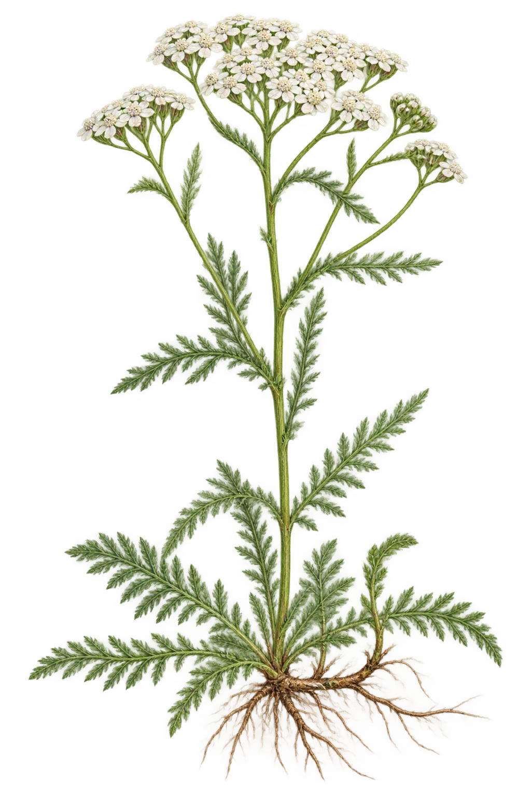

Ryllik
Achillea millefoliumArtsform vurdert · mangler artsoppføring
Opprett stengel med svært finflikete, fjærlignende blad og flate, forgrenete samlinger av små hvite kurver. Omtrent fem korte randblomster rundt små midtskiver er synlige på flere frontvendte kurver. En kort jordstengel og fine røtter er vist. Artsformen består visuell morfologikontroll, men ingen kanonisk artsoppføring finnes i gjeldende flora-runtime. Ingen arts-ID oppfinnes og bildet aktiveres ikke.